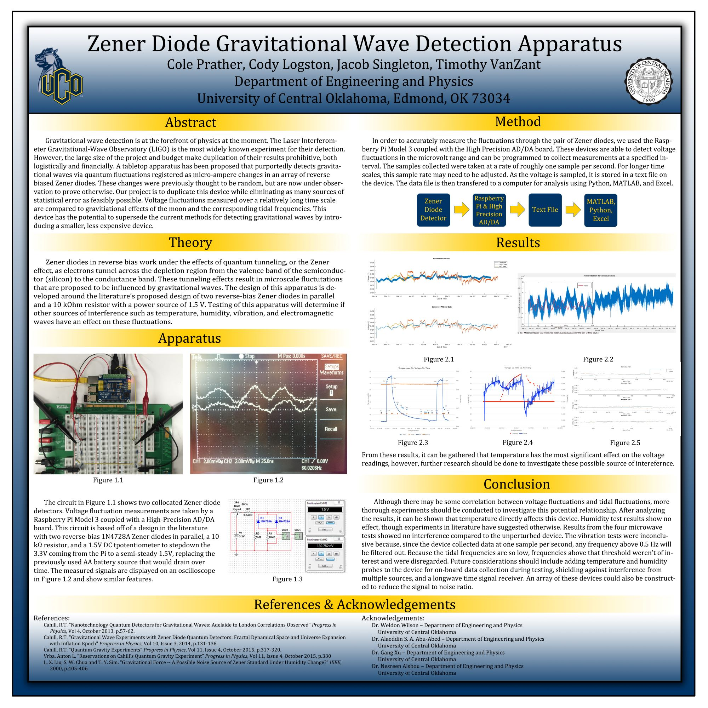

As a senior undergraduate student, I worked with three other physics majors to research and produce a device claimed to detect gravitational waves. The device was a fairly simple circuit consisting of two Zener diodes in reverse bias, making them sensitive to micro-scale current fluctuations. The author of the study behind this device, Reginald T. Cahill, suggested that the random fluctuations observed passing through these diodes are not random, and could be caused by, or related to, gravitational waves.
To ensure that the fluctuations were not the results of controllable environmental factors, our team tested the devices response to the temperature and humidity as well as some (available) vibration and radiation. Overall, our results were mostly inconclusive regarding the detection of gravitational waves. Our experiments showed that some correlation exists between the current fluctuations measured in the devices. Although the fluctuations appear to be correlated, we did not obtain a numerical analysis of their correlation.
